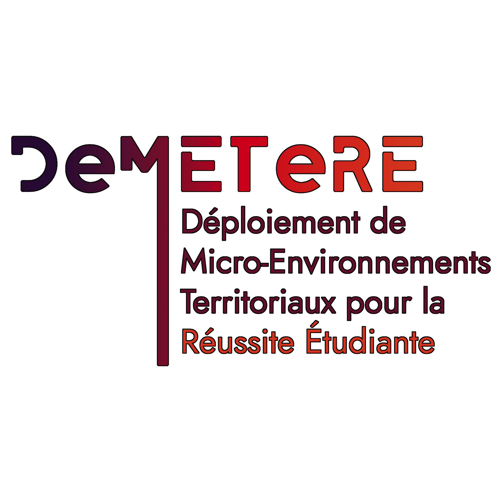

Lead VR Developer
November 2023 → March 2026

DeMETeRE was born from COVID-19 lockdowns. The goal is to bring college to the student. This largely involves virtualization. I joined the DeMETeRE project as the sole VR developer. The team was looking for someone from video games to create educational simulations for students. No project had been conceptualized yet, I was expected to help define what is possible to achieve (and then achieve it).
Supported by the pedagogical engineers, I met with the teachers and the students in industrial engineering for requirements and define specifications. Meanwhile, while I was about to start prototyping/research and development on Unity, a person close to the project advised me to try the Godot engine and I would never thank it enough.
Honestly, I was thinking of testing the engine for a week or two, realizing that it lacked far too many features and that I couldn’t do what I wanted, then go back to Unity. But not at all! I was impressed by what this small engine that fits all in an executable, its capabilities, the speed at which we can start developing (no setup, no shader compilation, no connection to an account/launcher...), and the adaptation happened much faster than I imagined.
My project was to recreate the manipulation of a Three-Dimensional Measuring Machine that only exists at the engineering school of Charleville-Mézières in the region. It's a machine that allows testing the conformity of industrial parts to the nearest micrometer, and there is a whole process that I had to learn myself in order to reproduce.
While the development of my project was progressing, we had requests for more virtualization projects and training to industrial machines. So I proposed to recruit a small team of developers and a graphic designer. I wrote the job offers, received the applications, participated in the interviews and selection of candidates. I also created a small exercise on Godot to familiarize them with the engine. The objective was to optimize the code of a vampire-survivor type game, fix bugs, and implement new features.
About a year after my arrival in the project, I became lead of the VR team. I made sure to welcome the newcommers,onboarding them on the project and their mission, then I helped when there was a technical problem. Finally, I created a Trello and a Teams chat where we organized and shared our work.